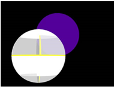
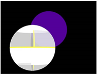

Without the BlendMat node.
With the BlendMat node
applied to the checkered
sphere (that has a
checkered alpha channel)
and the BlendMat operation
set to stencil.
The Shader menu’s BlendMat node sets how the pixels colored by the material is applied to combine with the pixels from objects behind. It is like the MergeMat node, but instead of blending with another material, it blends with whatever is rendered behind in the 3D scene.
|
 |
|
|
Without the BlendMat node. |
With the BlendMat node |
| 1. | Select 3D > Shader > BlendMat to add a BlendMat node after the material you want to merge with the background pixels. |
| 2. | Connect the BlendMat node to the img input of the 3D object you want to project the material on. |

| 3. | From the channels dropdown menu, select the channels you want to affect. |
| 4. | From the operation dropdown menu, select how you want to composite the BlendMat node’s input material and the background pixels together: |
• to set the material to black, select none.

• to show the material where the material and the background overlap, select replace.

• to composite the material over the background pixels according to the material’s alpha, select over.

• to show the background pixels where the material’s alpha is black, select stencil. Where the material’s alpha is white, the material is set to black.
For this to work, the BlendMat node needs to process the alpha channel, so set channels to rgba.
This operation is the opposite of mask.

• to show the background pixels where the material’s alpha is white, select mask. Where the material’s alpha is black, the material is also set to black.
For this to work, the BlendMat node needs to process the alpha channel, so set channels to rgba.
This operation is the opposite of stencil.

• to add the background pixels to the material, select plus.

• to use the material if its pixel values are greater than the background pixels or else use the background pixels, select max.
• to use the material if its pixel values are less than the background pixels or else use the background pixels, select min.
|
|